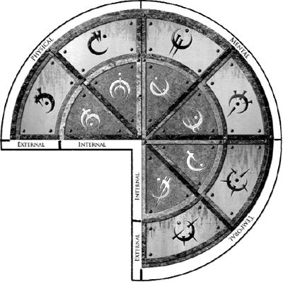
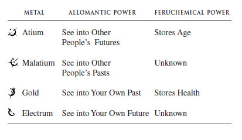

1. Metals Quick-Reference Chart
2. Names and Terms
3. Summary of Book One
You can also find extensive annotations of every chapter in the book, along with deleted scenes, a very active blog, and expanded world information at www.brandonsanderson.com.


ALENDI: A man who conquered the world a thousand years ago, before the Lord Ruler’s Ascension. Vin found his journal in the Lord Ruler’s palace, and thought—at first—that he had become the Lord Ruler. It was later discovered that his servant, Rashek, killed him and took his place. Alendi was a friend and protégé of Kwaan, a Terris scholar who thought that Alendi might be the Hero of Ages.
ALLOMANCY: A mystical hereditary power involving the burning of metals inside the body to gain special abilities.
ALLOMANTIC METALS: There are eight basic Allomantic metals. These come in pairs, comprising a base metal and its alloy. They can also be divided into two groups of four as internal metals (tin, pewter, copper, bronze) and external metals (iron, steel, zinc, brass). It was long assumed that there were only two other Allomantic metals: gold and atium. However, the discovery of alloys for gold and atium has expanded the number of metals to twelve. There have been rumors of other metals, one of which has been discovered. (See also: Aluminum.)
ALLOMANTIC PULSE: The signal given off by an Allomancer who is burning metals. Only someone who is burning bronze can “hear” an Allomantic pulse.
ALLRIANNE: Lord Ashweather Cett’s only daughter.
ALUMINUM: A metal Vin was forced to burn in the Lord Ruler’s palace. Once known only to the Steel Inquisitors, this metal, when burned, depletes all of an Allomancer’s other metal reserves. Its alloy, if it has one, is unknown.
AMARANTA: One of Straff Venture’s mistresses. An herbalist.
ANCHOR (ALLOMANTIC): A term used to refer to a piece of metal that an Allomancer Pushes on or Pulls on when burning iron or steel.
ASCENSION (OF THE LORD RULER): The Ascension is the term used to describe what happened to Rashek when he took the power at the Well of Ascension and became the Lord Ruler.
ASHFALLS: Ash falls frequently from the sky in the Final Empire because of the Ashmounts.
ASHMOUNTS: Seven large ash volcanoes that appeared in the Final Empire during the Ascension.
ASHWEATHER: Lord Cett’s first name.
ATIUM: A strange metal formerly produced in the Pits of Hathsin. It collected inside of small geodes that formed in crystalline pockets in caves beneath the ground.
BIRCHBANE: A common poison.
BOXING: The slang name for an imperial gold coin. The name comes from the picture on its back of Kredik Shaw, the Lord Ruler’s palace—or, the “box” in which he lives.
BREEZE: A Soother on Kelsier’s crew, now one of Elend’s foremost counselors.
BRONZEPULSE: Another term for an Allomantic pulse.
BURN (ALLOMANCY): An Allomancer utilizing or expending the metals in their stomachs. First, they must swallow a metal, then Allomantically metabolize it inside of them to access its power.
BURNLANDS: The deserts at the edges of the Final Empire.
CAMON: Vin’s old crewleader. A harsh man who often beat her, Camon was cast out by Kelsier. The Inquisitors eventually killed him.
CANTON: A suboffice within the Steel Ministry.
CETT: Lord Ashweather Cett is the most prominent king who has managed to gain power in the Western Dominance. His home city is Fadrex.
CHANNEREL: The river that runs through Luthadel.
CLADENT: Clubs’s real name.
CLIP (COINAGE): The nickname for an imperial copper coin in the Final Empire. Commonly used by Mistborn and Coinshots for jumping and attacking.
CLUBS: A Smoker on Kelsier’s crew, now general of Elend’s armies. He once was a skaa carpenter.
COINSHOT: A Misting who can burn steel.
COLLAPSE, THE: The death of the Lord Ruler and the fall of the Final Empire.
COPPERCLOUD: The invisible, obscuring field set up by someone burning copper. If an Allomancer burns metals while within a coppercloud, their Allomantic pulses are hidden from those burning bronze. The term “Coppercloud” is also, sometimes, used to refer to a Smoker (a Misting who can burn copper).
DEEPNESS, THE: The mythological monster or force that threatened the land just before the rise of the Lord Ruler and the Final Empire. The term comes from Terris lore, and the Hero of Ages was the one prophesied to come and eventually defeat the Deepness. The Lord Ruler claims to have defeated it when he Ascended.
DEMOUX, CAPTAIN: Ham’s second-in-command, a soldier in Elend’s palace guard.
DOCKSON: Kelsier’s old right-hand man, informal leader of his crew now that Kelsier is dead. He has no Allomantic powers.
DOMINANCE (FINAL EMPIRE): A province of the Final Empire. Luthadel is in the Central Dominance. The four surrounding dominances are called the Inner Dominances, and include most of the population and culture of the Final Empire. After the Collapse, the Final Empire shattered, and different kings took power, trying to claim leadership of the various dominances, effectively turning each one into a kingdom of its own.
DOX: Dockson’s nickname.
ELEND VENTURE: King of the Central Dominance, son of Straff Venture.
EXTINGUISH (ALLOMANTIC): To cease burning an Allomantic metal.
FADREX: A modestly sized, well-fortified city in the Western Dominance. Capital city and home to Ashweather Cett. A main place of stockpile for the Canton of Resource.
FELT: Once one of Straff’s spies, the man was (like most of Straff’s employees) left behind at the fall of Luthadel. He gave his allegiance to Elend instead.
FINAL EMPIRE: The empire established by the Lord Ruler. The name came from the fact that, being immortal, he felt that it would be the last empire the world ever knew, since it would never fall or end.
FLARE (ALLOMANTIC): To draw a little extra power from an Allomantic metal at the expense of making it burn faster.
GNEORNDIN: Ashweather Cett’s only son.
GORADEL: Once a soldier in the Luthadel Garrison, Goradel was guarding the palace when Vin decided to infiltrate and kill the Lord Ruler. Vin convinced him to switch sides, and he later led Elend through the palace to try and rescue her. Now a member of Elend’s guard.
HAM: A Thug on Kelsier’s crew, now captain of Elend’s palace guard.
HAMMOND: Ham’s real name.
HATHSIN: See Pits of Hathsin.
HERO OF AGES, THE: The mythological prophesied savior of the Terris people. It was foretold that he would come, take the power at the Well of Ascension, then be selfless enough to give it up in order to save the world from the Deepness. Alendi was thought to be the Hero of Ages, but was killed before he could complete his quest.
INQUISITORS, STEEL: A group of strange creatures, priests who served the Lord Ruler. They have spikes driven completely through their heads—point-first through the eyes—yet continue to live. They were fanatically devoted to him, and were used primarily to hunt out and kill skaa with Allomantic powers. They have the abilities of a Mistborn, and some others.
IRONEYES: Marsh’s nickname in the crew.
IRONPULL: Pulling on a metal when Allomantically burning iron. This Pull exerts a force on the metal item, yanking it directly toward the Allomancer. If the metallic item, known as an anchor, is heavier than the Allomancer, he or she will instead be Pulled toward the metal source.
JANARLE: Straff Venture’s second-in-command.
JASTES LEKAL: Heir to the Lekal house title, one of Elend’s former friends. He and Elend often talked politics and philosophy together with Telden.
KANDRA: A race of strange creatures who can ingest the dead body of a person, then reproduce that body with their own flesh. They keep the bones of the person they imitate, using them, as kandra themselves have no bones. They serve Contracts with mankind—which must be bought with atium—and are relatives of mistwraiths.
KEEPER (TERRIS): “Keeper” is often used as simply another term for a Feruchemist. The Keepers are actually an organization of Feruchemists dedicated to discovering, then memorizing, all of the knowledge and religions that existed before the Ascension. The Lord Ruler hunted them to near extinction, forcing them to remain hidden.
KELL: Kelsier’s nickname.
KELSIER: The most famous thieving crewleader in the Final Empire, Kelsier raised a rebellion of skaa and overthrew the Lord Ruler, but was killed in the process. He was Mistborn, and was Vin’s teacher.
KHLENNIUM: An ancient kingdom that existed before the rise of the Final Empire. It was Alendi’s homeland.
KLISS: A woman whom Vin knew in the court at Luthadel. She eventually turned out to be an informant for hire.
KOLOSS: A race of bestial warriors created by the Lord Ruler during his Ascension, then used by him to conquer the world.
KREDIK SHAW: The Lord Ruler’s palace in Luthadel. It means “the Hill of a Thousand Spires” in the old Terris language.
KWAAN: A Terris scholar before the Collapse. He was a Worldbringer, and was the first to mistakenly think that Alendi was the Hero of Ages. He later changed his mind, betraying his former friend.
LADRIAN: Breeze’s real name.
LESTIBOURNES: Spook’s real name.
LLAMAS, MISTBORN: Brandon’s writing group. Mistborn Llamas burn various kinds of plants to gain super-llaman powers. T-shirts can be found on the Web site.
LORD RULER: The emperor who ruled the Final Empire for a thousand years. He was once named Rashek, and was a Terris servant who was hired by Alendi. He killed Alendi, however, and went to the Well of Ascension in his place, and there took the power and Ascended. He was finally killed by Vin.
LURCHER: A Misting who can burn steel.
LUTHADEL: Capital of the Final Empire, and largest city in the land. Luthadel is known for its textiles, its forges, and its majestic noble keeps.
MALATIUM: The metal discovered by Kelsier, often dubbed the Eleventh Metal. Nobody knows where he found it, or why he thought it could kill the Lord Ruler. It did, however, eventually lead Vin to the clue she needed to defeat the emperor.
MARDRA: Ham’s wife. She doesn’t like to be involved in his thieving practices, or exposing their children to the danger of his lifestyle, and generally keeps her distance from the members of the crew.
METALMIND: A piece of metal that a Feruchemist uses as a kind of battery, filling it with certain attributes that he or she can later withdraw. Specific metalminds are named after the different metals: tinmind, steelmind, etc.
MIST: The strange, omnipresent fog that falls on the Final Empire every night. Thicker than a regular fog, it swirls and churns about, almost as if it were alive.
MISTBORN: An Allomancer who can burn all of the Allomantic metals.
MISTCLOAK: A garment worn by many Mistborn as a mark of their station. It is constructed from dozens of thick ribbons of cloth that are sewn together at the top, but allowed to spread free from the shoulders down.
MISTING: An Allomancer who can burn only one metal. They are much more common than Mistborn. (Note: In Allomancy, an Allomancer has either one power or all of them. There are no in-betweens with two or three.)
MISTWRAITH: A nonsentient relative of the kandra people. Mistwraiths are globs of boneless flesh that scavenge the land at night, eating bodies they find, then using the skeletons for their own bodies.
MOORDEN: One of the only obligators who chose to stay in Luthadel and serve Elend.
OBLIGATOR: A member of the Lord Ruler’s priesthood. Obligators were more than just religious figures, however; they were civil bureaucrats, and even a spy network. A business deal or promise that wasn’t witnessed by an obligator was not considered legally or morally binding.
ORESEUR: A kandra employed by Kelsier. He once played the part of Lord Renoux, Vin’s uncle. Vin now holds his Contract.
PENROD, FERSON: One of the most prominent noblemen left in Luthadel. A member of Elend’s Assembly.
PEWTERARM: Another term for a Thug, a Misting who can burn pewter.
PHILEN: A prominent merchant in Luthadel and a member of Elend’s Assembly.
PITS OF HATHSIN, THE: A network of caverns that were once the only place in the Final Empire that produced atium. The Lord Ruler used prisoners to work them. Kelsier destroyed their ability to produce atium shortly before he died.
PULL (ALLOMANTIC): Using Allomancy to Pull on something—either people’s emotions with zinc, or metals with iron.
PUSH (ALLOMANTIC): Using Allomancy to Push on something—either people’s emotions with brass, or metals with steel.
RASHEK: A Terris packman before the Ascension, Rashek was hired by Alendi to help him make the trek to the Well of Ascension. Rashek never got along well with Alendi, and eventually killed him. He took the power himself, and became the Lord Ruler.
REEN: Vin’s brother, the one who protected her and trained her as a thief. Reen was brutal and unforgiving, but he did save Vin from their insane mother, then protected her during her childhood.
RELEASE (FERUCHEMICAL): When a Feruchemist stops tapping a metalmind, no longer drawing forth its power.
RENOUX, LORD: A nobleman that Kelsier killed, then hired the kandra OreSeur to imitate. Vin played the part of his niece, Valette Renoux.
RIOT (ALLOMANTIC): When an Allomancer burns zinc and Pulls on a person’s emotions, enflaming them.
RIOTER (ALLOMANTIC): A Misting who can burn zinc.
SAZE: Sazed’s nickname on the crew.
SAZED: A Terris Keeper who joined Kelsier’s crew against the wishes of his people, then helped overthrow the Final Empire.
SEEKER (ALLOMANTIC): A Misting who can burn bronze.
SHAN ELARIEL: Elend’s former fiancée, a Mistborn whom Vin killed.
SKAA: The peasantry of the Final Empire. They were once of different races and nationalities, but over the thousand-year span of the empire the Lord Ruler worked hard to stamp out any sense of identity in the people, eventually succeeding in creating a single, homogeneous race of slave workers.
SMOKER (ALLOMANTIC): An Allomancer who can burn copper. Also known as a Coppercloud.
SOOTHE (ALLOMANTIC): When an Allomancer burns brass and Pushes on a person’s emotions, dampening them.
SOOTHER: A Misting who can burn brass.
SPOOK: A Tineye on Kelsier’s crew. The youngest member of the crew, Spook was only fifteen when the Lord Ruler was overthrown. He is Clubs’s nephew, and was once known for his use of garbled street slang.
STEEL MINISTRY: The Lord Ruler’s priesthood, consisting of a small number of Steel Inquisitors and a larger body of priests called obligators. The Steel Ministry was more than just a religious organization; it was the civic framework of the Final Empire as well.
STRAFF VENTURE: Elend’s father, king of the Northern Dominance. He makes his home in Urteau.
SURVIVOR OF SATHSIN: A cognomen of Kelsier, referring to the fact that he is the only known prisoner to ever escape the prison camps at the Pits of Hathsin.
SYNOD (TERRIS): The elite leaders of the Terris Keeper organization.
TAP (FERUCHEMICAL): Drawing power from within a Feruchemist’s metalminds. It is parallel to the term “burn” used by Allomancers.
TATHINGDWEN: Capital of the Terris Dominance.
TELDEN: One of Elend’s old friends, with whom he would talk politics and philosophy.
TENSOON: Straff Venture’s kandra.
TERRIS: The dominance in the far north of the Final Empire. It is the only dominance to retain the name of the kingdom it used to be, perhaps a sign of the Lord Ruler’s fondness for his homeland.
THUG (ALLOMANTIC): A Misting who can burn pewter.
TINDWYL: A Terris Keeper and a member of the Synod.
TINEYE: A Misting who can burn tin.
URTEAU: Capital of the Northern Dominance, and seat of House Venture.
VALETTE RENOUX: The alias that Vin used when infiltrating noble society during the days before the Collapse.
WELL OF ASCENSION: A mythological center of power from Terris lore. The Well of Ascension was said to hold a magical reserve of power that could be drawn upon by one who made the trek to visit it at the right time.
WORLDBRINGER: A sect of scholarly Terris Feruchemists before the Collapse. The subsequent Order of Keepers was based on the Worldbringers.
YEDEN: A member of Kelsier’s crew and the skaa rebellion. He was killed during the fight against the Lord Ruler.
YOMEN, LORD: An obligator in Urteau who was politically opposed to Cett.
Mistborn: The Final Empire introduced the land of the Final Empire, ruled over by a powerful immortal known as the Lord Ruler. A thousand years before, the Lord Ruler took the power at the Well of Ascension and supposedly defeated a powerful force or creature known only as the Deepness.
The Lord Ruler conquered the known world and founded the Final Empire. He ruled for a thousand years, stamping out all remnants of the individual kingdoms, cultures, religions, and languages that used to exist in his land. In their place he set up his own system. Certain peoples were dubbed “skaa,” a word that meant something akin to “slave” or “peasant.” Other peoples were dubbed nobility, and most of these were descendants of those people who had supported the Lord Ruler during his years of conquest. The Lord Ruler had supposedly given them the power of Allomancy in order to gain powerful assassins and warriors who had minds that could think, as opposed to the brutish koloss, and had used them well in conquering and maintaining his empire.
Skaa and nobility were forbidden to interbreed, and the nobility were somehow given the power of Allomancy. During the thousand years of the Lord Ruler’s reign, many rebellions occurred among the skaa, but none were successful.
Finally, a half-breed Mistborn known as Kelsier decided to challenge the Lord Ruler. Once the most famous of gentleman thieves in the Final Empire, Kelsier had been known for his daring schemes. Those eventually ended with his capture, however, and he had been sent to the Lord Ruler’s death camp at the Pits of Hathsin, the secret source of atium.
It was said that nobody ever escaped the Pits of Hathsin alive—but Kelsier did just that. He gained his powers as a Mistborn during that time, and managed to free himself, earning the title the Survivor of Hathsin. At this point, he turned from his selfish ways and decided to try his most daring plan yet: the overthrow of the Final Empire.
He recruited a team of thieves, mostly half-breed Mistings, to help him achieve his goal. During this time, he also recruited a young half-breed Mistborn girl named Vin. Vin was unaware of her powers, and Kelsier brought her into the crew to train her, theoretically to have someone to whom he could pass his legacy.
Kelsier’s crew slowly gathered an underground army of skaa rebels. The crew began to fear that Kelsier was setting himself up to be another Lord Ruler. He sought to make himself a legend among the skaa, becoming almost a religious figure to them. Meanwhile, Vin—who had been raised on the streets by a cruel brother—was growing to trust people for the first time in her life. As this happened, Vin began to believe in Kelsier and his purpose.
During the process of working on their plan, Vin was used as a spy among the nobility, and was trained to infiltrate their balls and parties playing the part of “Valette Renoux,” a young noblewoman from the countryside. During the first of these balls, she met Elend Venture, a young, idealistic nobleman. He eventually showed her that not all noblemen were deserving of their poor reputation, and the two became enamored of each other, despite Kelsier’s best efforts.
The crew also discovered a journal, apparently written by the Lord Ruler himself during the days before the Ascension. This book painted a different picture of the tyrant; it depicted a melancholy, tired man who was trying his best to protect the people against the Deepness, despite the fact that he didn’t really understand it.
In the end, it was revealed that Kelsier’s plan had been much more broad than simple use of the army to overthrow the empire. He’d partially spent so much effort on raising troops so that he would have an excuse to spread rumors about himself. He also used it to train his crew in the arts of leadership and persuasion. The true extent of his plan was revealed when he sacrificed his life in a very visible way, making himself a martyr to the skaa and finally convincing them to rise up and overthrow the Lord Ruler.
One of Kelsier’s crewmembers—a man who had been playing the part of “Lord Renoux,” Valette’s uncle—turned out to be a kandra named OreSeur. OreSeur took on Kelsier’s form, then went about spreading rumors that Kelsier had returned from the grave, inspiring the skaa. After this, he became Contractually bound to Vin, and was charged with watching over her after Kelsier’s death.
Vin was the one who in fact killed the Lord Ruler. She discovered that he wasn’t actually a god, or even immortal—he had simply found a way to extend his life and his power by making use of both Allomancy and Feruchemy at the same time. He wasn’t the hero from the logbook—but, instead, was that man’s servant, a Feruchemist of some great power. Still, he was much stronger in Allomancy than Vin. While she was fighting him, she drew upon the mists somehow, burning them in place of metals. She still doesn’t know why or how this happened. With that power—and with the knowledge of his true nature—she was able to defeat and kill him.
The Final Empire was thrown into chaos. Elend Venture took control of Luthadel, the capital, and put Kelsier’s crew in prime governmental positions.
One year has passed.